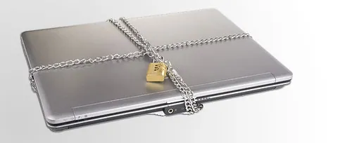

Staying Safe Online
Safety online comes down to a few steady habits: strong passwords, regular updates, and knowing the patterns scammers use. Learn these and you can email, shop, and bank with real confidence.

Kindly Keystrokes is an independent educational website and is not affiliated with, endorsed by, or sponsored by any company mentioned.
Passwords that actually protect you
A password is the key to an account. A good one is long and hard for a stranger to guess, yet easy for you to remember. The modern advice is to use a short phrase rather than a single word.
- Think of three or four unrelated words, such as copper-garden-lantern-seven.
- Use a different password for your email than for anything else, because email is the master key to your other accounts.
- Write your passwords in a small notebook kept at home, away from the computer — paper cannot be hacked.
- Never share a password by email, message, or over the telephone. No honest company will ever ask for it.
Tip: Length beats complication. A long phrase like four plain words is both stronger and easier to remember than a short jumble of symbols.
Two-step verification, explained simply
Many services now offer two-step verification (also called two-factor authentication). It sounds technical, but the idea is homely: as well as your password, the service sends a short code to your phone, and you type that code to prove it is really you. Even if a stranger somehow learned your password, they could not get in without your phone in their hand.
- In your email or account settings, look for Security and then Two-step verification.
- Turn it on and enter your mobile number when asked.
- From then on, when you sign in on a new device, a code arrives by text; type it in to continue.
- On your own computer you can usually tick Trust this device so you are not asked every single time.
Tip: Turn two-step verification on for your email first. Your email is the master key that can reset your other passwords, so it deserves the strongest lock.
Updates are armor
We met updates in the first lesson, and here is why they matter so much: most updates quietly close the small gaps that criminals try to slip through. Letting Windows and your programs update themselves is one of the simplest, strongest things you can do. When your computer asks to update and restart, say yes at a convenient time.
How to recognize a scam
A scam is a trick designed to frighten or rush you into handing over money or access. Scammers are skilled actors, but their tricks follow patterns, and once you know the patterns they lose their power.
Be on guard whenever a message or call does any of these things:
- Creates urgency or fear — "Your account will be closed in one hour," "Your computer is infected." Real companies do not rush you like this.
- Demands an unusual payment — gift cards, wire transfers, or cryptocurrency. These are the tools of scammers, never of legitimate businesses.
- Asks to connect to your computer — a genuine company will not phone out of the blue and ask to control your screen. If anyone requests remote access to your machine this way, refuse and hang up; it is a scam.
- Asks for a password or code — no honest bank, store, or technology company will ever ask you to read out a password or a security code.
Tip: When in doubt, stop. Hang up the phone or close the message, wait a few minutes, and contact the company yourself using an address or number you already trust — never the one the suspicious message gave you.
Fake warnings that pop up on screen
Sometimes a frightening box appears while you browse, claiming your computer is infected and telling you to call a number or click a button. This is a fake warning. It is not from Microsoft and not from your computer — it is a web page pretending to be one.
- Do not call any number it shows, and do not click any button inside the box.
- Close the web page: click the X at the top of the browser window.
- If the page will not close, restart the computer using the Start menu.
- Afterwards, run a scan with the built-in Windows Security for peace of mind.
Remember the reminder bar at the top of every page on this site: a real help website never telephones you and never asks to reach into your computer. If a message claims otherwise, that claim alone tells you it is false.
Shopping and banking with confidence
Done carefully, shopping and banking online are safe and convenient. A few habits make all the difference.
- Type a store or bank's address yourself, or use a page you have saved; do not arrive by clicking a link in an email.
- Look for a small padlock at the left of the address bar, which shows the connection is private.
- Use a credit card rather than a debit card where you can, as credit cards offer stronger protection if something goes wrong.
- Keep the confirmation email as your receipt until the goods arrive.
A word on Wi-Fi away from home
The free Wi-Fi in a café, library, or airport is handy for reading the news or checking a map. But because you share it with strangers, it is wise to save anything private — banking especially — for your own home network.
- Feel free to browse, read, and look things up on public Wi-Fi.
- Avoid signing in to your bank or entering card details while connected to it.
- When you finish, tell the computer to forget the network so it does not join it automatically next time.
Helping a family member stay safe
Once these habits are second nature, you become a quiet guardian for the people around you. If a relative mentions a worrying call or a strange message, you can help calmly.
- Remind them that no honest company phones out of the blue to ask for passwords, codes, or payment in gift cards.
- Encourage them to pause and check with you or their bank before acting on any message that creates fear or urgency.
- Offer to turn on two-step verification for their email together — it is a kindness that protects everything else.
Keeping a copy of what matters
Computers are reliable, but nothing lasts forever. A backup is simply a second copy of your important files — photos, letters, documents — kept somewhere else, so a lost or broken computer never means lost memories.
There are two gentle approaches, and either is fine:
- A memory stick (also called a USB stick or flash drive) plugs into the computer. Copy your Pictures and Documents onto it now and then, and keep it in a drawer.
- Cloud storage such as the OneDrive built into Windows keeps a copy on the internet automatically, so it is there even if the computer is not.
Tip: Set a gentle habit: on the first of the month, copy your newest photos to a memory stick. Ten minutes once a month is cheap insurance for a lifetime of pictures.
Protecting your privacy day to day
Beyond scams, a few calm habits keep your personal life your own.
- Share less than you are asked for. A newsletter does not need your date of birth, and a store does not need your life story.
- Be thoughtful about what you post publicly — addresses, travel plans, and photos of the grandchildren are best kept to private messages with people you know.
- Lock your computer when you step away, by pressing the Windows key and the letter L together, so a passerby cannot read your screen.
- Clear out old accounts you no longer use. An account you have forgotten is one you are not protecting, so closing it removes one more place your details could sit.
None of this requires special software or expense — just a handful of small, steady habits. Taken together, they put you firmly in charge of your own information, which is exactly where you belong.
If something goes wrong
If you think you have been caught by a scam, you are not alone and it is not your fault — these tricks fool thousands of careful people every year. Act calmly and promptly.
- If you shared card or bank details, telephone your bank using the number on the back of your card and tell them.
- Change the password on any account you think was exposed, starting with your email.
- Report the scam to the U.S. Federal Trade Commission at reportfraud.ftc.gov, which helps the authorities track the people behind it, and tell a trusted family member so they can watch out too.
You have now finished all five lessons. You can find your way around Windows, send email, print, use the programs that matter, and keep yourself safe. That is a genuine achievement — be proud of it. Keep this site handy, print the guides you use most, and return whenever you would like a patient reminder.